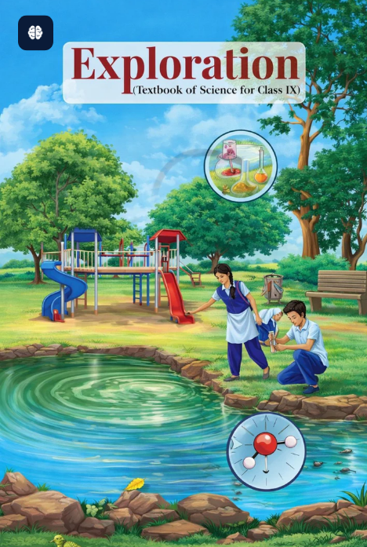

CLASS-9 SCIENCE- EXPLORATION
NCERT Solutions

Chapter-wise solutions for Class 9 Science - Exploration
Chapter-1
(Exploration: Entering the World of Secondary Science)
Open →
Chapter-2
(Cell:The Building Block of Life)
Open →
Chapter-3
(Tissues in Action)
Open →
Chapter-4
(Describing Motion Around Us)
Open →
Chapter-5
(Exploring Mixtures and their Separation)
Open →
Chapter-6
(How Forces Affect Motion)
Open →
Chapter-7
(Work, Energy, and Simple Machines)
Open →
Chapter-8
(Journey Inside the Atom)
Open →
Chapter-9
(Atomic Foundations of Matter)
Open →
Chapter-10
(Sound Waves: Characteristics and Applications)
Open →
Chapter-11
(Reproduction: How Life Continues)
Open →
Chapter-12
(Patterns in Life: Diversity and Classification)
Open →
Chapter-13
(Earth as a System: Energy, Matter, and Life)
Open →